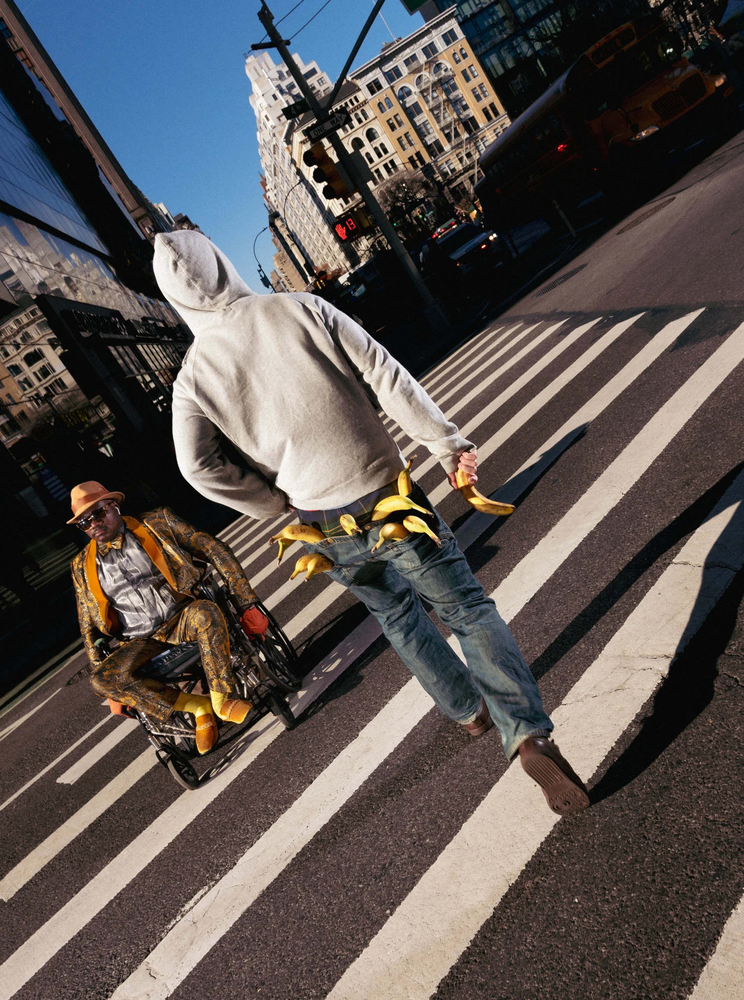
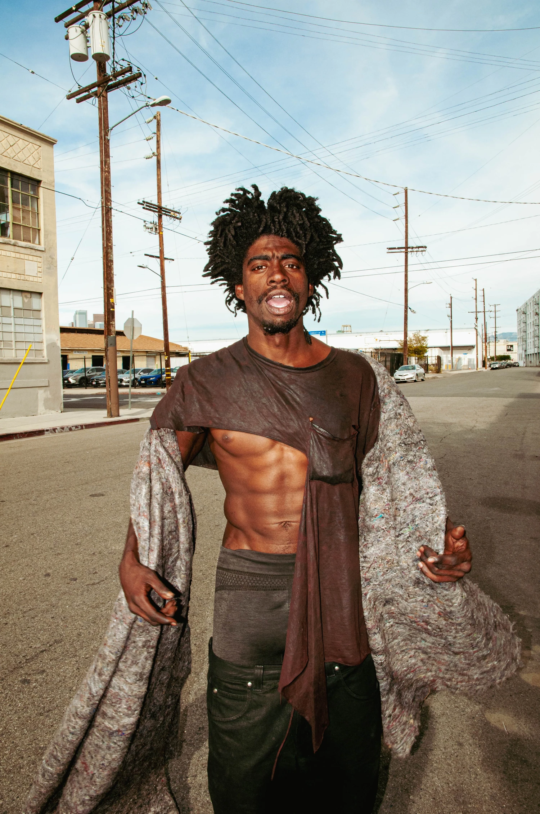
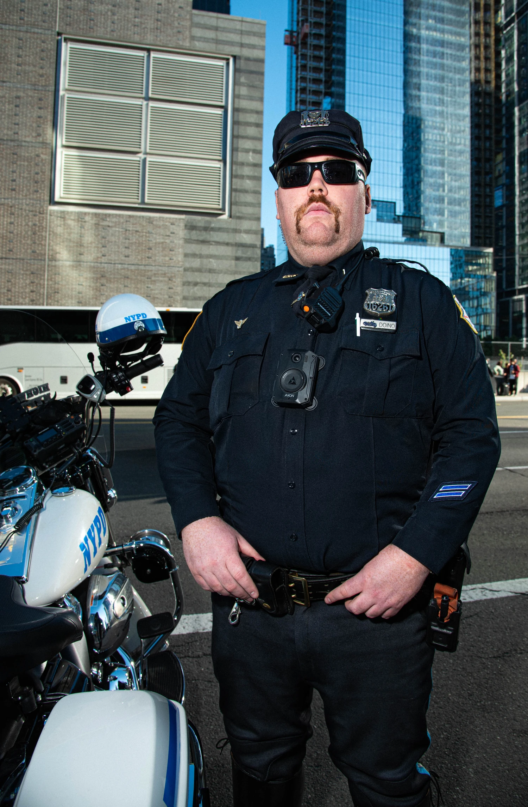
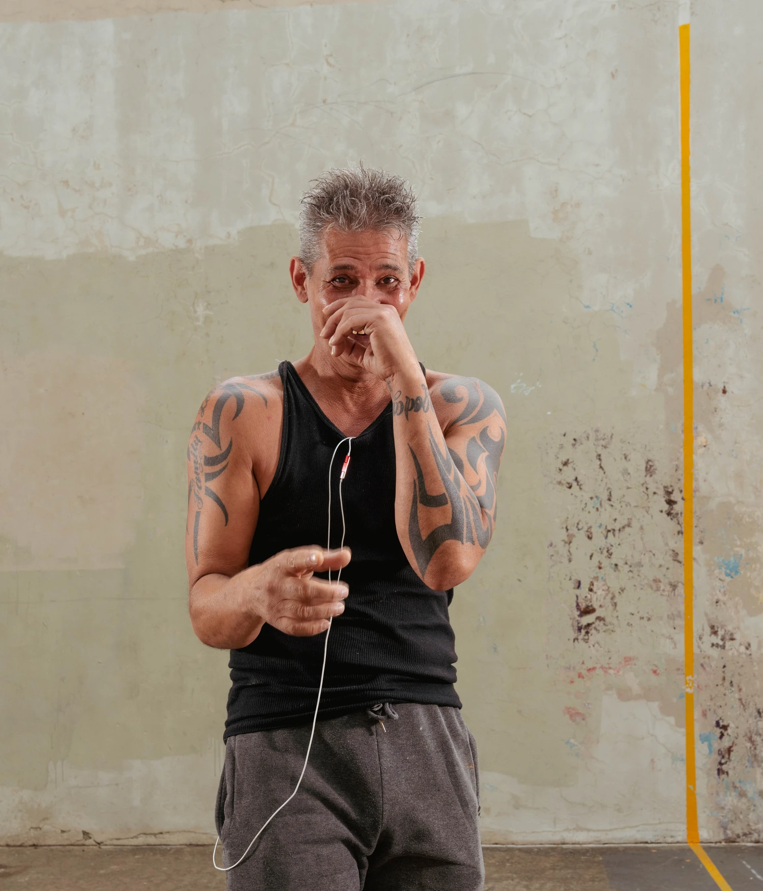

Finn Crawford is an artist and photographer in New York. His work hyperfixates on textures and personalities in everyday objects and people. You can reach him through email or on instagram.




00
|
00